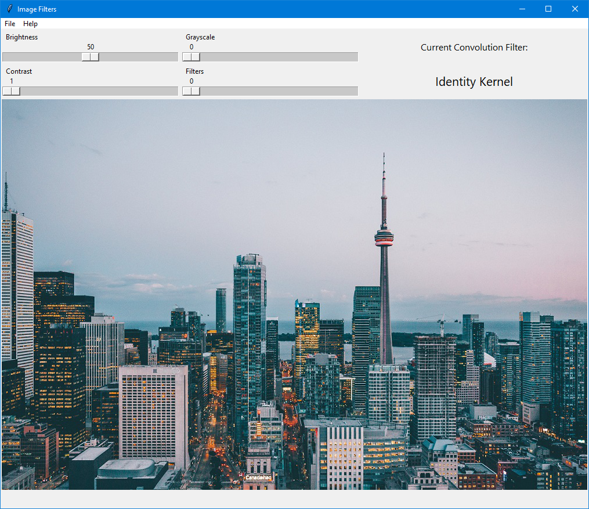
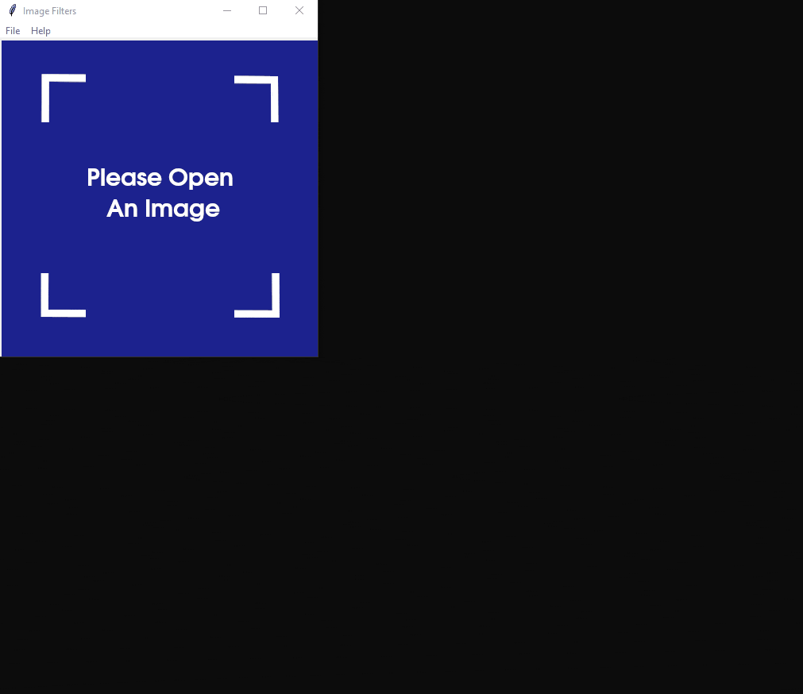
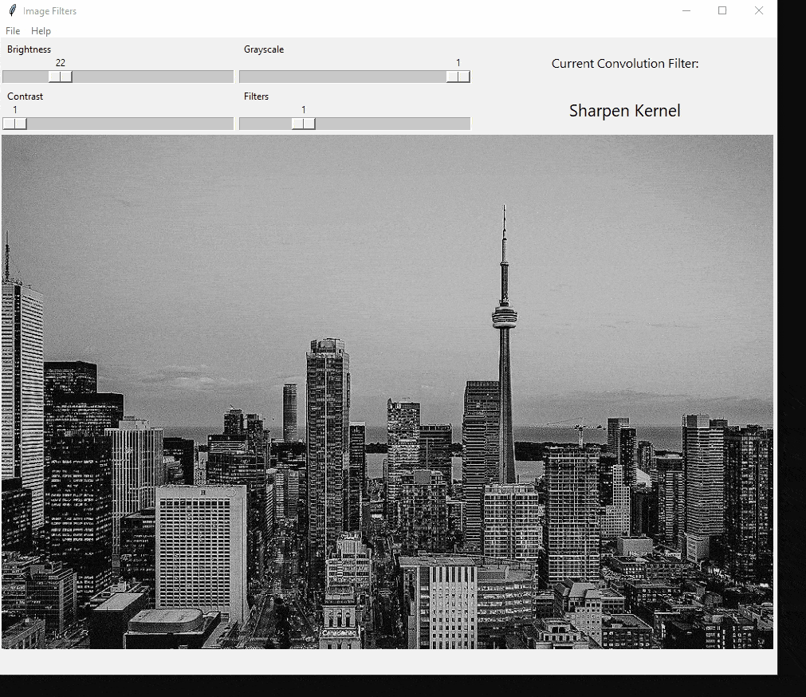
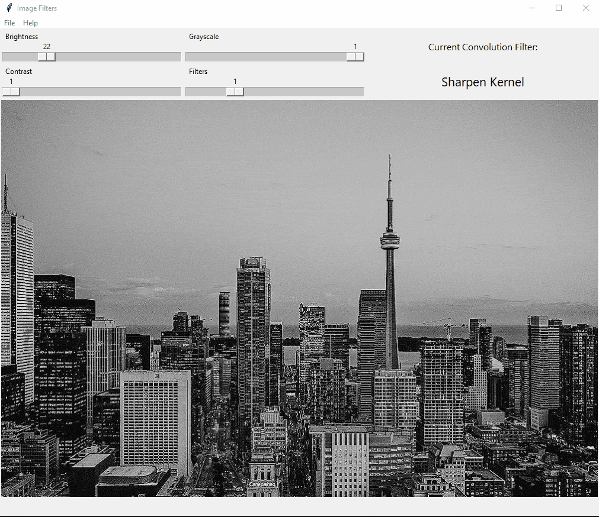
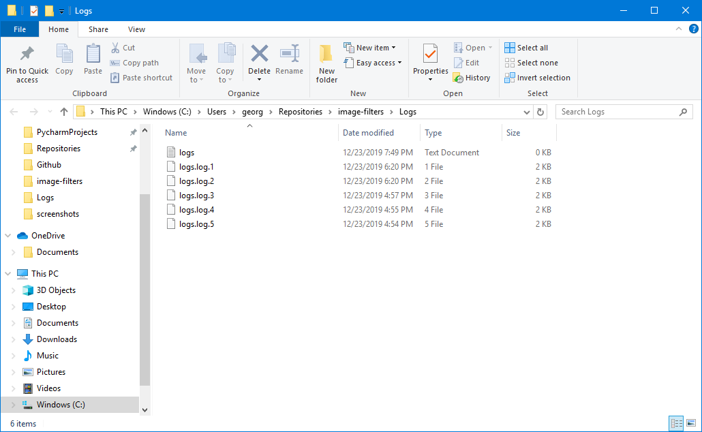

App Image Filters Built using OpenCV and TKinter

GUI layout
This is the GUI layout for the application once an image is opened.

Open Image
The image can be opened using the File Menu.

Image Sliders
Various sliders can be used to modify the image.

Resizable Window
The window can be resized by dragging the edges and the image will adjust accordingly.

Save Image
The altered image can be saved using the File Menu.

View Logs
This app stores logs in the log folder and can be accessed using the File Menu.
Project Description
A simple image filter application that uses OpenCV and TKinter to create new images.
Project Details
- Native GUI built with TKinter
- Brightness, Color and Greyscale
- Several basic filters
- Built in logging